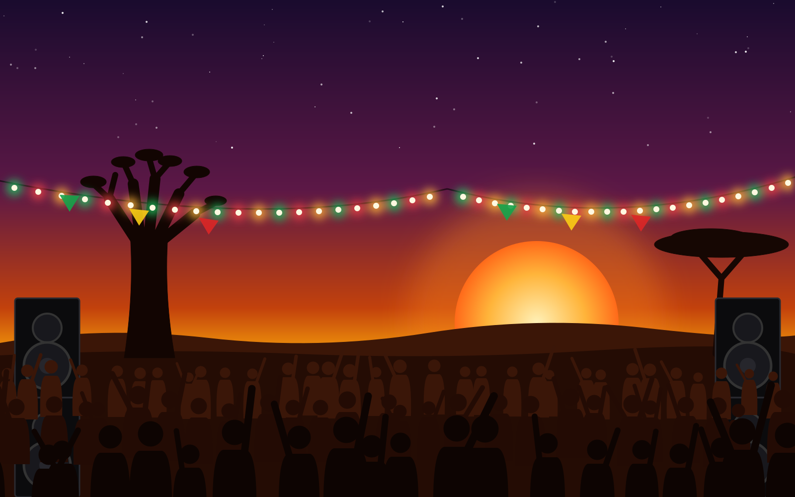
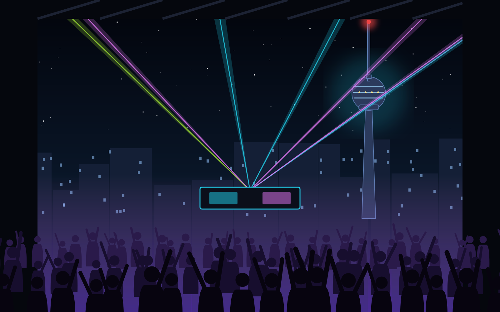

France
Rap français, R&B, les grandes radios urbaines.
JACK RADIO · EN DIRECT
Rap, R&B, shatta, dancehall, afro et reggaeton en direct, du monde entier. Tourne la roulette, la station arrive au centre, appuie et écoute : directement sur le site, sans passer par les sites des radios.
Gratuit, dans ton navigateur, sans compte. Il faut une connexion Internet pour écouter.

LE PRINCIPE
Une destination, un style (rap, R&B, afro…) ou cherche une radio par son nom.
Fais tourner la roulette : la station choisie arrive au centre, dans son décor.
Appuie et écoute en direct, sans quitter Jack Radio. Change de station quand tu veux.
LES DESTINATIONS
Chaque destination a son décor : Paris, New York, Los Angeles, Londres, les Antilles, l'Afrique, le Maghreb, l'Espagne et l'Allemagne.
Rap français, R&B, les grandes radios urbaines.
Hip-hop de New York et de Los Angeles.
Londres : hip-hop et R&B.
Guadeloupe, Martinique, Guyane, Haïti : shatta, dancehall et sons des îles.

Côte d'Ivoire, Cameroun, Congo, Mali, Ghana.
Maroc, Algérie, Tunisie.
Rap et reggaeton en espagnol.

Deutschrap et sons urbains.
LES FONCTIONS
Rap, R&B, shatta, dancehall, afro, reggaeton : la roulette ne garde que ce que tu veux écouter.
Garde tes radios préférées et retrouve une station par son nom.
Envoie à un ami un lien direct vers la radio que tu écoutes.
Si un flux coupe, Jack Radio bascule tout seul sur une radio du même style ou du même pays.
Sur téléphone, change de radio ou mets en pause depuis l'écran verrouillé et tes écouteurs.
Une fois le site en ligne, tu peux l'installer sur ton écran d'accueil.
Les radios appartiennent à leurs diffuseurs. Leur disponibilité peut varier selon le pays et le moment.
QUESTIONS
Non. Tu ouvres Jack Radio et tu écoutes. Tes favoris sont gardés dans ton navigateur, sur cet appareil.
Chaque radio est diffusée par sa station : son flux peut être coupé ou bloqué dans certains pays. Dans ce cas, la radio de secours prend le relais avec une station du même style.
Oui, dans le navigateur du téléphone. Tu peux aussi contrôler la lecture depuis l'écran verrouillé.
Le slogan de Jack Radio : les sons des quartiers du monde entier, réunis sur une seule fréquence.